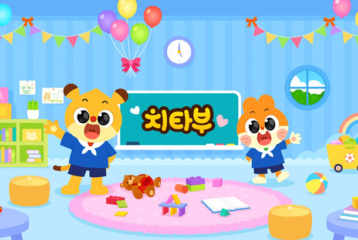

Phase 1: 구체적인 실행 계획
이 단계에서는 시장 반응 테스트와 핵심 기술 R&D를 위해 다양한 파일럿 게임을 제작합니다.
오즈 리라이트

- 상하좌우 터치 디펜스
- 주인공 화면 중앙, 몬스터 4방향 등장
- 한 대 맞으면 게임 종료 (하드코어 캐주얼)
프로젝트 B

- 3단 터치 또는 건물 부수기 테마
- 간단한 터치로 시원한 타격감 제공
- 짧은 시간 안에 즐기는 형태
고블린 퀘스트

- 고블린 캐릭터의 빠른 길 찾기 퍼즐
- 전략적 사고와 빠른 판단력 요구
- 다양한 레벨 디자인
치타부 캐릭터 활용 게임

- 치타부의 스피드 구조대: 치타부 캐릭터 활용 러닝/장애물 회피 게임. 빠른 속도로 친구 구출 미션. 좌우 터치/스와이프, 점프/슬라이드 조작. 햄동이, 아르미의 특수 능력 활용.
- 치타부의 무궁화 게임: 무궁화 꽃이 피었습니다 규칙 적용. 뒤돌아봤을 때만 터치하여 앞으로 이동. 치타부의 빠른 속도와 순간 판단력 활용.
- 치타부의 리듬 댄스: 치타부와 함께 음악에 맞춰 춤추는 리듬 게임. 화면에 나타나는 노트를 정확한 타이밍에 터치하여 점수 획득. 햄동이의 춤 실력 활용.
미드 코어급 게임 / 웹 게임 미들웨어 프레임워크
파일럿 프로젝트 기술/노하우 기반, 2026년 정부 지원 사업 연계 목표. 미드 코어 이상 게임 개발 또는 웹 게임 미들웨어 프레임워크 구축을 통해 장기적 기술 경쟁력 확보.
연도별 개발 로드맵
항목
2025년
2026년
2027년
캐주얼
R&D
미드코어